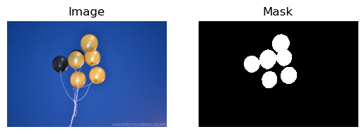
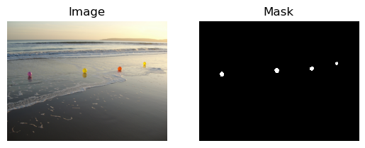
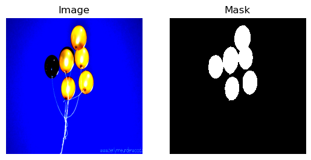
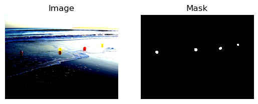
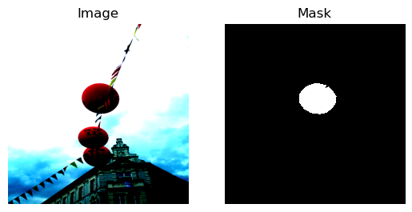
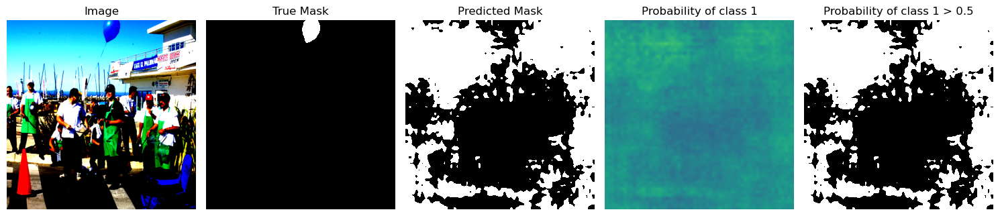
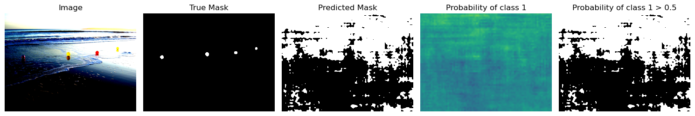
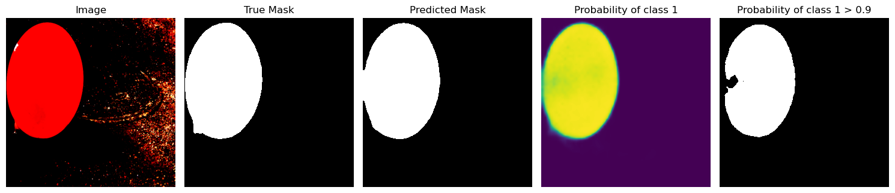
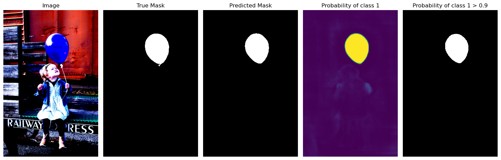

import requests
url = "https://github.com/matterport/Mask_RCNN/releases/download/v2.1/balloon_dataset.zip"
filename = "balloon_dataset.zip"
response = requests.get(url)
with open(filename, "wb") as file:
file.write(response.content)Semantic Segmentation
In this post, I perform binary semantic segmentation in PyTorch using a Fully Convolutional Network (FCN) with a ResNet-50 backbone. The model is pre-trained on a subset of COCO using only the 20 categories from the Pascal VOC dataset, and I fine-tune it on the balloon dataset from the Mask R-CNN repository.
I referred to the code for balloon dataset of Mask R-CNN repository and the colab tutorial of detectron2 for the balloon dataset; and the torchvision semantic segmentaion reference training scripts for the overall code structure.
Balloon dataset
Download the balloon dataset from Mask R-CNN repository and transform it into a format that is compatible with the binary semantic segmentation task.
dataset
├── train
│ ├── images
│ │ ├── <file1>.png
│ │ ├── <file2>.png
│ │ └── ...
│ └── masks
│ ├── <file1>.png
│ ├── <file2>.png
│ └── ...
└── val
├── images
│ ├── <file1>.png
│ ├── <file2>.png
│ └── ...
└── masks
├── <file1>.png
├── <file2>.png
└── ...Download the dataset as an zip file.
Extract the zip file.
import zipfile
with zipfile.ZipFile(filename, "r") as file:
file.extractall()Remove the unnecessary folder.
import shutil
shutil.rmtree("__MACOSX")Convert the dataset into the binary semantic segmentation format.
import json
from pathlib import Path
import numpy as np
import skimage
def create_mask(dataset_dir, new_dataset_dir):
dataset_dir = Path(dataset_dir)
img_dir = Path(new_dataset_dir) / "images"
mask_dir = Path(new_dataset_dir) / "masks"
img_dir.mkdir(parents=True, exist_ok=True)
mask_dir.mkdir(parents=True, exist_ok=True)
with open(dataset_dir / "via_region_data.json") as file:
annotations = json.load(file)
for idx, v in enumerate(annotations.values()):
img = skimage.io.imread(dataset_dir / v["filename"])
height, width = img.shape[:2]
regions = v["regions"]
mask = np.zeros([height, width], dtype=np.uint8)
for region in regions.values():
anno = region["shape_attributes"]
px = anno["all_points_x"]
py = anno["all_points_y"]
poly = np.array([[y, x] for x, y in zip(px, py)])
mask += skimage.draw.polygon2mask((height, width), poly)
mask = mask.astype(np.bool).astype(np.uint8)
skimage.io.imsave(img_dir / (v["filename"][:-4] + ".png"), img)
skimage.io.imsave(mask_dir / (v["filename"][:-4] + ".png"), mask)create_mask("balloon/train", "dataset/train")
create_mask("balloon/val", "dataset/val")Dataset
from pathlib import Path
from torch.utils.data import Dataset
from torchvision import tv_tensors
from torchvision.io import read_image
class BalloonDataset(Dataset):
def __init__(self, dataset_dir, transform=None):
self.dataset_dir = Path(dataset_dir)
self.transform = transform
self.img_dir = self.dataset_dir / "images"
self.mask_dir = self.dataset_dir / "masks"
self.imgs = list(self.img_dir.glob("*.png"))
def __len__(self):
return len(self.imgs)
def __getitem__(self, idx):
img_path = self.imgs[idx]
mask_path = self.mask_dir / img_path.name
img = read_image(img_path)
mask = read_image(mask_path)[0]
img = tv_tensors.Image(img)
mask = tv_tensors.Mask(mask)
sample = {
"image": img,
"mask": mask
}
if self.transform:
sample = self.transform(sample)
return sampleimport matplotlib.pyplot as plt
from matplotlib.colors import ListedColormap
cmp = ListedColormap(['black','white'])dataset = BalloonDataset("dataset/train")
sample = dataset[0]
print(type(sample["image"]))
print(sample["image"].shape)
print(sample["image"].min(), sample["image"].max())
print()
print(type(sample["mask"]))
print(sample["mask"].shape)
print(sample["mask"].min(), sample["mask"].max())
plt.subplot(1,2,1)
plt.imshow(sample["image"].permute(1,2,0))
plt.title("Image")
plt.axis("off")
plt.subplot(1,2,2)
plt.imshow(sample["mask"], cmap=cmp)
plt.title("Mask")
plt.axis("off")
plt.show()<class 'torchvision.tv_tensors._image.Image'>
torch.Size([3, 1365, 2048])
tensor(0, dtype=torch.uint8) tensor(255, dtype=torch.uint8)
<class 'torchvision.tv_tensors._mask.Mask'>
torch.Size([1365, 2048])
tensor(0, dtype=torch.uint8) tensor(1, dtype=torch.uint8)
dataset = BalloonDataset("dataset/val")
sample = dataset[0]
print(type(sample["image"]))
print(sample["image"].shape)
print(sample["image"].min(), sample["image"].max())
print()
print(type(sample["mask"]))
print(sample["mask"].shape)
print(sample["mask"].min(), sample["mask"].max())
plt.subplot(1,2,1)
plt.imshow(sample["image"].permute(1,2,0))
plt.title("Image")
plt.axis("off")
plt.subplot(1,2,2)
plt.imshow(sample["mask"], cmap=cmp)
plt.title("Mask")
plt.axis("off")
plt.show()<class 'torchvision.tv_tensors._image.Image'>
torch.Size([3, 1536, 2048])
tensor(0, dtype=torch.uint8) tensor(255, dtype=torch.uint8)
<class 'torchvision.tv_tensors._mask.Mask'>
torch.Size([1536, 2048])
tensor(0, dtype=torch.uint8) tensor(1, dtype=torch.uint8)
Transforms
import torch
from torchvision.transforms import v2mean = (0.485, 0.456, 0.406) # ImageNet
std = (0.229, 0.224, 0.225) # ImageNet
base_size = 520
crop_size = 480
hflip_prob = 0.5
transform_train = v2.Compose(
[
v2.ToImage(),
v2.Resize(size=(base_size, base_size)),
v2.RandomHorizontalFlip(p=hflip_prob),
v2.RandomCrop(size=(crop_size, crop_size)),
v2.ToDtype(dtype={tv_tensors.Image:torch.float32, tv_tensors.Mask:torch.int64, "others":None}, scale=True),
v2.Normalize(mean=mean, std=std),
v2.ToPureTensor()
]
)
transform_val = v2.Compose(
[
v2.ToImage(),
v2.Resize(size=base_size),
v2.ToDtype(dtype={tv_tensors.Image:torch.float32, tv_tensors.Mask:torch.int64, "others":None}, scale=True),
v2.Normalize(mean=mean, std=std), # ImageNet mean and std
v2.ToPureTensor()
]
)dataset = BalloonDataset("dataset/train", transform=transform_train)
dataset_val = BalloonDataset("dataset/val", transform=transform_val)sample = dataset[0]
print(type(sample["image"]))
print(sample["image"].shape)
print(sample["image"].min(), sample["image"].max())
print()
print(type(sample["mask"]))
print(sample["mask"].shape)
print(sample["mask"].min(), sample["mask"].max())
plt.subplot(1,2,1)
plt.imshow(sample["image"].permute(1,2,0))
plt.title("Image")
plt.axis("off")
plt.subplot(1,2,2)
plt.imshow(sample["mask"], cmap=cmp)
plt.title("Mask")
plt.axis("off")
plt.show()Clipping input data to the valid range for imshow with RGB data ([0..1] for floats or [0..255] for integers). Got range [-1.9295317..2.622571].<class 'torch.Tensor'>
torch.Size([3, 480, 480])
tensor(-1.9295) tensor(2.6226)
<class 'torch.Tensor'>
torch.Size([480, 480])
tensor(0) tensor(1)
sample = dataset_val[0]
print(type(sample["image"]))
print(sample["image"].shape)
print(sample["image"].min(), sample["image"].max())
print()
print(type(sample["mask"]))
print(sample["mask"].shape)
print(sample["mask"].min(), sample["mask"].max())
plt.subplot(1,2,1)
plt.imshow(sample["image"].permute(1,2,0))
plt.title("Image")
plt.axis("off")
plt.subplot(1,2,2)
plt.imshow(sample["mask"], cmap=cmp)
plt.title("Mask")
plt.axis("off")
plt.show()Clipping input data to the valid range for imshow with RGB data ([0..1] for floats or [0..255] for integers). Got range [-1.7870152..2.4285715].<class 'torch.Tensor'>
torch.Size([3, 520, 693])
tensor(-1.7870) tensor(2.4286)
<class 'torch.Tensor'>
torch.Size([520, 693])
tensor(0) tensor(1)
DataLoader
num_workers = 0
batch_size = 2from torch.utils.data import DataLoader, RandomSampler, SequentialSampler
def collate_fn(batch):
images = torch.stack([sample["image"] for sample in batch])
masks = torch.stack([sample["mask"] for sample in batch])
return images, masks
data_loader = DataLoader(dataset,
batch_size=batch_size,
sampler=RandomSampler(dataset),
num_workers=num_workers,
drop_last=True,
collate_fn=collate_fn)
data_loader_val = DataLoader(dataset_val,
batch_size=1,
sampler=SequentialSampler(dataset_val),
num_workers=num_workers,
drop_last=False,
collate_fn=collate_fn)batch = next(iter(data_loader))
print(batch[0].shape, batch[1].shape)
print(batch[0].dtype, batch[1].dtype)
print(torch.unique(batch[1]))
plt.subplot(1,2,1)
plt.imshow(batch[0][0].permute(1,2,0))
plt.title("Image")
plt.axis("off")
plt.subplot(1,2,2)
plt.imshow(batch[1][0], cmap=cmp)
plt.title("Mask")
plt.axis("off")
plt.show()Clipping input data to the valid range for imshow with RGB data ([0..1] for floats or [0..255] for integers). Got range [-2.117904..2.64].torch.Size([2, 3, 480, 480]) torch.Size([2, 480, 480])
torch.float32 torch.int64
tensor([0, 1])
batch = next(iter(data_loader_val))
print(batch[0].shape, batch[1].shape)
print(batch[0].dtype, batch[1].dtype)
print(torch.unique(batch[1]))
plt.subplot(1,2,1)
plt.imshow(batch[0][0].permute(1,2,0))
plt.title("Image")
plt.axis("off")
plt.subplot(1,2,2)
plt.imshow(batch[1][0], cmap=cmp)
plt.title("Mask")
plt.axis("off")
plt.show()Clipping input data to the valid range for imshow with RGB data ([0..1] for floats or [0..255] for integers). Got range [-1.7870152..2.4285715].torch.Size([1, 3, 520, 693]) torch.Size([1, 520, 693])
torch.float32 torch.int64
tensor([0, 1])
Model
import torchvision
from torch.nn import Conv2ddevice = torch.device("cuda" if torch.cuda.is_available() else "cpu")
num_classes = 2
model_name = "fcn_resnet50"
model_weights = "COCO_WITH_VOC_LABELS_V1"
aux_loss = Truemodel = torchvision.models.get_model(
name=model_name,
weights=model_weights,
aux_loss=aux_loss,
)
out_in_channels = model.classifier[4].in_channels
model.classifier[4] = Conv2d(out_in_channels, num_classes, kernel_size=(1, 1), stride=(1, 1))
aux_in_channels = model.aux_classifier[4].in_channels
model.aux_classifier[4] = Conv2d(aux_in_channels, num_classes, kernel_size=(1, 1), stride=(1, 1))
model = model.to(device)modelFCN(
(backbone): IntermediateLayerGetter(
(conv1): Conv2d(3, 64, kernel_size=(7, 7), stride=(2, 2), padding=(3, 3), bias=False)
(bn1): BatchNorm2d(64, eps=1e-05, momentum=0.1, affine=True, track_running_stats=True)
(relu): ReLU(inplace=True)
(maxpool): MaxPool2d(kernel_size=3, stride=2, padding=1, dilation=1, ceil_mode=False)
(layer1): Sequential(
(0): Bottleneck(
(conv1): Conv2d(64, 64, kernel_size=(1, 1), stride=(1, 1), bias=False)
(bn1): BatchNorm2d(64, eps=1e-05, momentum=0.1, affine=True, track_running_stats=True)
(conv2): Conv2d(64, 64, kernel_size=(3, 3), stride=(1, 1), padding=(1, 1), bias=False)
(bn2): BatchNorm2d(64, eps=1e-05, momentum=0.1, affine=True, track_running_stats=True)
(conv3): Conv2d(64, 256, kernel_size=(1, 1), stride=(1, 1), bias=False)
(bn3): BatchNorm2d(256, eps=1e-05, momentum=0.1, affine=True, track_running_stats=True)
(relu): ReLU(inplace=True)
(downsample): Sequential(
(0): Conv2d(64, 256, kernel_size=(1, 1), stride=(1, 1), bias=False)
(1): BatchNorm2d(256, eps=1e-05, momentum=0.1, affine=True, track_running_stats=True)
)
)
(1): Bottleneck(
(conv1): Conv2d(256, 64, kernel_size=(1, 1), stride=(1, 1), bias=False)
(bn1): BatchNorm2d(64, eps=1e-05, momentum=0.1, affine=True, track_running_stats=True)
(conv2): Conv2d(64, 64, kernel_size=(3, 3), stride=(1, 1), padding=(1, 1), bias=False)
(bn2): BatchNorm2d(64, eps=1e-05, momentum=0.1, affine=True, track_running_stats=True)
(conv3): Conv2d(64, 256, kernel_size=(1, 1), stride=(1, 1), bias=False)
(bn3): BatchNorm2d(256, eps=1e-05, momentum=0.1, affine=True, track_running_stats=True)
(relu): ReLU(inplace=True)
)
(2): Bottleneck(
(conv1): Conv2d(256, 64, kernel_size=(1, 1), stride=(1, 1), bias=False)
(bn1): BatchNorm2d(64, eps=1e-05, momentum=0.1, affine=True, track_running_stats=True)
(conv2): Conv2d(64, 64, kernel_size=(3, 3), stride=(1, 1), padding=(1, 1), bias=False)
(bn2): BatchNorm2d(64, eps=1e-05, momentum=0.1, affine=True, track_running_stats=True)
(conv3): Conv2d(64, 256, kernel_size=(1, 1), stride=(1, 1), bias=False)
(bn3): BatchNorm2d(256, eps=1e-05, momentum=0.1, affine=True, track_running_stats=True)
(relu): ReLU(inplace=True)
)
)
(layer2): Sequential(
(0): Bottleneck(
(conv1): Conv2d(256, 128, kernel_size=(1, 1), stride=(1, 1), bias=False)
(bn1): BatchNorm2d(128, eps=1e-05, momentum=0.1, affine=True, track_running_stats=True)
(conv2): Conv2d(128, 128, kernel_size=(3, 3), stride=(2, 2), padding=(1, 1), bias=False)
(bn2): BatchNorm2d(128, eps=1e-05, momentum=0.1, affine=True, track_running_stats=True)
(conv3): Conv2d(128, 512, kernel_size=(1, 1), stride=(1, 1), bias=False)
(bn3): BatchNorm2d(512, eps=1e-05, momentum=0.1, affine=True, track_running_stats=True)
(relu): ReLU(inplace=True)
(downsample): Sequential(
(0): Conv2d(256, 512, kernel_size=(1, 1), stride=(2, 2), bias=False)
(1): BatchNorm2d(512, eps=1e-05, momentum=0.1, affine=True, track_running_stats=True)
)
)
(1): Bottleneck(
(conv1): Conv2d(512, 128, kernel_size=(1, 1), stride=(1, 1), bias=False)
(bn1): BatchNorm2d(128, eps=1e-05, momentum=0.1, affine=True, track_running_stats=True)
(conv2): Conv2d(128, 128, kernel_size=(3, 3), stride=(1, 1), padding=(1, 1), bias=False)
(bn2): BatchNorm2d(128, eps=1e-05, momentum=0.1, affine=True, track_running_stats=True)
(conv3): Conv2d(128, 512, kernel_size=(1, 1), stride=(1, 1), bias=False)
(bn3): BatchNorm2d(512, eps=1e-05, momentum=0.1, affine=True, track_running_stats=True)
(relu): ReLU(inplace=True)
)
(2): Bottleneck(
(conv1): Conv2d(512, 128, kernel_size=(1, 1), stride=(1, 1), bias=False)
(bn1): BatchNorm2d(128, eps=1e-05, momentum=0.1, affine=True, track_running_stats=True)
(conv2): Conv2d(128, 128, kernel_size=(3, 3), stride=(1, 1), padding=(1, 1), bias=False)
(bn2): BatchNorm2d(128, eps=1e-05, momentum=0.1, affine=True, track_running_stats=True)
(conv3): Conv2d(128, 512, kernel_size=(1, 1), stride=(1, 1), bias=False)
(bn3): BatchNorm2d(512, eps=1e-05, momentum=0.1, affine=True, track_running_stats=True)
(relu): ReLU(inplace=True)
)
(3): Bottleneck(
(conv1): Conv2d(512, 128, kernel_size=(1, 1), stride=(1, 1), bias=False)
(bn1): BatchNorm2d(128, eps=1e-05, momentum=0.1, affine=True, track_running_stats=True)
(conv2): Conv2d(128, 128, kernel_size=(3, 3), stride=(1, 1), padding=(1, 1), bias=False)
(bn2): BatchNorm2d(128, eps=1e-05, momentum=0.1, affine=True, track_running_stats=True)
(conv3): Conv2d(128, 512, kernel_size=(1, 1), stride=(1, 1), bias=False)
(bn3): BatchNorm2d(512, eps=1e-05, momentum=0.1, affine=True, track_running_stats=True)
(relu): ReLU(inplace=True)
)
)
(layer3): Sequential(
(0): Bottleneck(
(conv1): Conv2d(512, 256, kernel_size=(1, 1), stride=(1, 1), bias=False)
(bn1): BatchNorm2d(256, eps=1e-05, momentum=0.1, affine=True, track_running_stats=True)
(conv2): Conv2d(256, 256, kernel_size=(3, 3), stride=(1, 1), padding=(1, 1), bias=False)
(bn2): BatchNorm2d(256, eps=1e-05, momentum=0.1, affine=True, track_running_stats=True)
(conv3): Conv2d(256, 1024, kernel_size=(1, 1), stride=(1, 1), bias=False)
(bn3): BatchNorm2d(1024, eps=1e-05, momentum=0.1, affine=True, track_running_stats=True)
(relu): ReLU(inplace=True)
(downsample): Sequential(
(0): Conv2d(512, 1024, kernel_size=(1, 1), stride=(1, 1), bias=False)
(1): BatchNorm2d(1024, eps=1e-05, momentum=0.1, affine=True, track_running_stats=True)
)
)
(1): Bottleneck(
(conv1): Conv2d(1024, 256, kernel_size=(1, 1), stride=(1, 1), bias=False)
(bn1): BatchNorm2d(256, eps=1e-05, momentum=0.1, affine=True, track_running_stats=True)
(conv2): Conv2d(256, 256, kernel_size=(3, 3), stride=(1, 1), padding=(2, 2), dilation=(2, 2), bias=False)
(bn2): BatchNorm2d(256, eps=1e-05, momentum=0.1, affine=True, track_running_stats=True)
(conv3): Conv2d(256, 1024, kernel_size=(1, 1), stride=(1, 1), bias=False)
(bn3): BatchNorm2d(1024, eps=1e-05, momentum=0.1, affine=True, track_running_stats=True)
(relu): ReLU(inplace=True)
)
(2): Bottleneck(
(conv1): Conv2d(1024, 256, kernel_size=(1, 1), stride=(1, 1), bias=False)
(bn1): BatchNorm2d(256, eps=1e-05, momentum=0.1, affine=True, track_running_stats=True)
(conv2): Conv2d(256, 256, kernel_size=(3, 3), stride=(1, 1), padding=(2, 2), dilation=(2, 2), bias=False)
(bn2): BatchNorm2d(256, eps=1e-05, momentum=0.1, affine=True, track_running_stats=True)
(conv3): Conv2d(256, 1024, kernel_size=(1, 1), stride=(1, 1), bias=False)
(bn3): BatchNorm2d(1024, eps=1e-05, momentum=0.1, affine=True, track_running_stats=True)
(relu): ReLU(inplace=True)
)
(3): Bottleneck(
(conv1): Conv2d(1024, 256, kernel_size=(1, 1), stride=(1, 1), bias=False)
(bn1): BatchNorm2d(256, eps=1e-05, momentum=0.1, affine=True, track_running_stats=True)
(conv2): Conv2d(256, 256, kernel_size=(3, 3), stride=(1, 1), padding=(2, 2), dilation=(2, 2), bias=False)
(bn2): BatchNorm2d(256, eps=1e-05, momentum=0.1, affine=True, track_running_stats=True)
(conv3): Conv2d(256, 1024, kernel_size=(1, 1), stride=(1, 1), bias=False)
(bn3): BatchNorm2d(1024, eps=1e-05, momentum=0.1, affine=True, track_running_stats=True)
(relu): ReLU(inplace=True)
)
(4): Bottleneck(
(conv1): Conv2d(1024, 256, kernel_size=(1, 1), stride=(1, 1), bias=False)
(bn1): BatchNorm2d(256, eps=1e-05, momentum=0.1, affine=True, track_running_stats=True)
(conv2): Conv2d(256, 256, kernel_size=(3, 3), stride=(1, 1), padding=(2, 2), dilation=(2, 2), bias=False)
(bn2): BatchNorm2d(256, eps=1e-05, momentum=0.1, affine=True, track_running_stats=True)
(conv3): Conv2d(256, 1024, kernel_size=(1, 1), stride=(1, 1), bias=False)
(bn3): BatchNorm2d(1024, eps=1e-05, momentum=0.1, affine=True, track_running_stats=True)
(relu): ReLU(inplace=True)
)
(5): Bottleneck(
(conv1): Conv2d(1024, 256, kernel_size=(1, 1), stride=(1, 1), bias=False)
(bn1): BatchNorm2d(256, eps=1e-05, momentum=0.1, affine=True, track_running_stats=True)
(conv2): Conv2d(256, 256, kernel_size=(3, 3), stride=(1, 1), padding=(2, 2), dilation=(2, 2), bias=False)
(bn2): BatchNorm2d(256, eps=1e-05, momentum=0.1, affine=True, track_running_stats=True)
(conv3): Conv2d(256, 1024, kernel_size=(1, 1), stride=(1, 1), bias=False)
(bn3): BatchNorm2d(1024, eps=1e-05, momentum=0.1, affine=True, track_running_stats=True)
(relu): ReLU(inplace=True)
)
)
(layer4): Sequential(
(0): Bottleneck(
(conv1): Conv2d(1024, 512, kernel_size=(1, 1), stride=(1, 1), bias=False)
(bn1): BatchNorm2d(512, eps=1e-05, momentum=0.1, affine=True, track_running_stats=True)
(conv2): Conv2d(512, 512, kernel_size=(3, 3), stride=(1, 1), padding=(2, 2), dilation=(2, 2), bias=False)
(bn2): BatchNorm2d(512, eps=1e-05, momentum=0.1, affine=True, track_running_stats=True)
(conv3): Conv2d(512, 2048, kernel_size=(1, 1), stride=(1, 1), bias=False)
(bn3): BatchNorm2d(2048, eps=1e-05, momentum=0.1, affine=True, track_running_stats=True)
(relu): ReLU(inplace=True)
(downsample): Sequential(
(0): Conv2d(1024, 2048, kernel_size=(1, 1), stride=(1, 1), bias=False)
(1): BatchNorm2d(2048, eps=1e-05, momentum=0.1, affine=True, track_running_stats=True)
)
)
(1): Bottleneck(
(conv1): Conv2d(2048, 512, kernel_size=(1, 1), stride=(1, 1), bias=False)
(bn1): BatchNorm2d(512, eps=1e-05, momentum=0.1, affine=True, track_running_stats=True)
(conv2): Conv2d(512, 512, kernel_size=(3, 3), stride=(1, 1), padding=(4, 4), dilation=(4, 4), bias=False)
(bn2): BatchNorm2d(512, eps=1e-05, momentum=0.1, affine=True, track_running_stats=True)
(conv3): Conv2d(512, 2048, kernel_size=(1, 1), stride=(1, 1), bias=False)
(bn3): BatchNorm2d(2048, eps=1e-05, momentum=0.1, affine=True, track_running_stats=True)
(relu): ReLU(inplace=True)
)
(2): Bottleneck(
(conv1): Conv2d(2048, 512, kernel_size=(1, 1), stride=(1, 1), bias=False)
(bn1): BatchNorm2d(512, eps=1e-05, momentum=0.1, affine=True, track_running_stats=True)
(conv2): Conv2d(512, 512, kernel_size=(3, 3), stride=(1, 1), padding=(4, 4), dilation=(4, 4), bias=False)
(bn2): BatchNorm2d(512, eps=1e-05, momentum=0.1, affine=True, track_running_stats=True)
(conv3): Conv2d(512, 2048, kernel_size=(1, 1), stride=(1, 1), bias=False)
(bn3): BatchNorm2d(2048, eps=1e-05, momentum=0.1, affine=True, track_running_stats=True)
(relu): ReLU(inplace=True)
)
)
)
(classifier): FCNHead(
(0): Conv2d(2048, 512, kernel_size=(3, 3), stride=(1, 1), padding=(1, 1), bias=False)
(1): BatchNorm2d(512, eps=1e-05, momentum=0.1, affine=True, track_running_stats=True)
(2): ReLU()
(3): Dropout(p=0.1, inplace=False)
(4): Conv2d(512, 2, kernel_size=(1, 1), stride=(1, 1))
)
(aux_classifier): FCNHead(
(0): Conv2d(1024, 256, kernel_size=(3, 3), stride=(1, 1), padding=(1, 1), bias=False)
(1): BatchNorm2d(256, eps=1e-05, momentum=0.1, affine=True, track_running_stats=True)
(2): ReLU()
(3): Dropout(p=0.1, inplace=False)
(4): Conv2d(256, 2, kernel_size=(1, 1), stride=(1, 1))
)
)with torch.inference_mode():
image, target = next(iter(data_loader))
image, target = image.to(device), target.to(device)
output = model(image)
print(output.keys())
print(output["out"].shape)
print(output["aux"].shape)
output = output["out"]
image = image.detach().cpu()
true_mask = target.detach().cpu()
pred_mask = output.argmax(1).detach().cpu()
probs = output.softmax(1).detach().cpu()
print(image.shape, target.shape)
print(true_mask.shape, pred_mask.shape)
print(output.shape, probs.shape)
p = 0.5
plt.figure(figsize=(15, 5))
plt.subplot(1,5,1)
plt.imshow(image[0].permute(1,2,0))
plt.title("Image")
plt.axis("off")
plt.subplot(1,5,2)
plt.imshow(true_mask[0], cmap=cmp)
plt.title("True Mask")
plt.axis("off")
plt.subplot(1,5,3)
plt.imshow(pred_mask[0], cmap=cmp)
plt.title("Predicted Mask")
plt.axis("off")
plt.subplot(1,5,4)
plt.imshow(probs[0, 1], clim=(0, 1))
plt.title("Probability of class 1")
plt.axis("off")
plt.subplot(1,5,5)
plt.imshow((probs[0, 1] > p).to(torch.bool), cmap=cmp)
plt.title(f"Probability of class 1 > {p}")
plt.axis("off")
plt.tight_layout()
plt.show()Clipping input data to the valid range for imshow with RGB data ([0..1] for floats or [0..255] for integers). Got range [-2.0836544..2.64].odict_keys(['out', 'aux'])
torch.Size([2, 2, 480, 480])
torch.Size([2, 2, 480, 480])
torch.Size([2, 3, 480, 480]) torch.Size([2, 480, 480])
torch.Size([2, 480, 480]) torch.Size([2, 480, 480])
torch.Size([2, 2, 480, 480]) torch.Size([2, 2, 480, 480])
with torch.inference_mode():
image, target = next(iter(data_loader_val))
image, target = image.to(device), target.to(device)
output = model(image)
output = output["out"]
image = image.detach().cpu()
true_mask = target.detach().cpu()
pred_mask = output.argmax(1).detach().cpu()
probs = output.softmax(1).detach().cpu()
print(image.shape, target.shape)
print(true_mask.shape, pred_mask.shape)
print(output.shape, probs.shape)
p = 0.5
plt.figure(figsize=(15, 5))
plt.subplot(1,5,1)
plt.imshow(image[0].permute(1,2,0))
plt.title("Image")
plt.axis("off")
plt.subplot(1,5,2)
plt.imshow(true_mask[0], cmap=cmp)
plt.title("True Mask")
plt.axis("off")
plt.subplot(1,5,3)
plt.imshow(pred_mask[0], cmap=cmp)
plt.title("Predicted Mask")
plt.axis("off")
plt.subplot(1,5,4)
plt.imshow(probs[0, 1], clim=(0, 1))
plt.title("Probability of class 1")
plt.axis("off")
plt.subplot(1,5,5)
plt.imshow((probs[0, 1] > p).to(torch.bool), cmap=cmp)
plt.title(f"Probability of class 1 > {p}")
plt.axis("off")
plt.tight_layout()
plt.show()Clipping input data to the valid range for imshow with RGB data ([0..1] for floats or [0..255] for integers). Got range [-1.7870152..2.4285715].torch.Size([1, 3, 520, 693]) torch.Size([1, 520, 693])
torch.Size([1, 520, 693]) torch.Size([1, 520, 693])
torch.Size([1, 2, 520, 693]) torch.Size([1, 2, 520, 693])
Preparing Training
lr = 0.01
momentum = 0.9
weight_decay = 1e-4
epochs = 10
print_freq = 5params = [
{"params": [p for p in model.backbone.parameters() if p.requires_grad]},
{"params": [p for p in model.classifier.parameters() if p.requires_grad]},
{"params": [p for p in model.aux_classifier.parameters() if p.requires_grad]},
]optimizer = torch.optim.SGD(params,
lr=lr,
momentum=momentum,
weight_decay=weight_decay)iters_per_epoch = len(data_loader)
iters_per_epoch30lr_scheduler = torch.optim.lr_scheduler.PolynomialLR(
optimizer,
total_iters=iters_per_epoch * epochs,
power=0.9
)class ConfusionMatrix:
def __init__(self, num_classes):
self.num_classes = num_classes
self.mat = None
def update(self, true, pred):
n = self.num_classes
if self.mat is None:
self.mat = torch.zeros((n, n), dtype=torch.int64, device=true.device)
with torch.inference_mode():
# T, P
# 0, 0 => 2*0 + 0 = 0 True Negative
# 0, 1 => 2*0 + 1 = 1 False Positive
# 1, 0 => 2*1 + 0 = 2 False Negative
# 1, 1 => 2*1 + 1 = 3 True Positive
k = (true >= 0) & (true < n)
inds = n * true[k].to(torch.int64) + pred[k]
self.mat += torch.bincount(inds, minlength=n**2).reshape(n, n)
def compute(self):
# Confusion Matrix
# [[TN, FP],
# [FN, TP]]
h = self.mat.float()
# TN, TP
# TN -> Correctly predicted as class 0
# TP -> Correctly predicted as class 1
diag = torch.diag(h)
# Overall accuracy
# (TN + TP) / (TN + FP + FN + TP)
acc_global = diag.sum() / h.sum()
# Actual Negative, Actual Positive
# (TN + FP) -> Actual Negative -> # of pixels that are class 0
# (FN + TP) -> Actual Positive -> # of pixels that are class 1
hsum1 = h.sum(1)
# Predicted Negative, Predicted Positive
# (TN + FN) -> Predicted Negative -> # of pixels predicted as class 0
# (FP + TP) -> Predicted Positive -> # of pixels predicted as class 1
hsum0 = h.sum(0)
# Accuracy of class 0, Accuracy of class 1
# (TN) / (TN + FP) -> Accuracy of class 0
# (TN + FP = Actual Negative -> # of pixels that are class 0)
#
# (TP) / (FN + TP) -> Accuracy of class 1
# (FN + TP = Actual Positive -> # of pixels that are class 1)
acc = diag / hsum1
# IoU for class 0, IoU for class 1
# (TN) / ((TN + FP) + (TN + FN) - TN) => TN / (TN + FP + FN) -> IoU for class 0
# (TP) / ((FN + TP) + (FP + TP) - TP) => TP / (FN + FP + TP) -> IoU for class 1
iou = diag / (hsum1 + hsum0 - diag)
return acc_global, acc, ioudef evaluate(model, data_loader, device, num_classes):
model.eval()
confmat = ConfusionMatrix(num_classes)
with torch.inference_mode():
for image, target in data_loader:
image, target = image.to(device), target.to(device)
output = model(image)
output = output["out"]
true_mask = target.flatten()
pred_mask = output.argmax(1).flatten()
confmat.update(true_mask, pred_mask)
acc_global, acc, iou = confmat.compute()
return acc_global, acc, ioudef criterion(outputs, target):
"""
outputs: {"out": [batch_size, num_classes, H, W], "aux": [batch_size, num_classes, H, W]}
target : [batch_size, M, M]
"""
losses = {}
for name, output in outputs.items():
losses[name] = torch.nn.functional.cross_entropy(output, target, ignore_index=255)
return losses["out"] + 0.5 * losses["aux"]def train_one_epoch(model, criterion, optimizer, data_loader, lr_scheduler, device, print_freq):
model.train()
for idx, (image, target) in enumerate(data_loader):
image, target = image.to(device), target.to(device)
output = model(image)
loss = criterion(output, target)
optimizer.zero_grad()
loss.backward()
optimizer.step()
lr_scheduler.step()
if idx % print_freq == 0:
print(f"iteration: {idx}, loss: {loss.item()}, lr: {optimizer.param_groups[0]['lr']}")import datetime
from time import perf_counteroutput_dir = Path("output")
output_dir.mkdir(exist_ok=True, parents=True)Training Loop
start_time = perf_counter()
mean_iou_best = 0
for epoch in range(epochs):
print(f"epoch: {epoch}")
train_one_epoch(model, criterion, optimizer, data_loader, lr_scheduler, device, print_freq)
acc_global, acc, iou = evaluate(model, data_loader_val, device, num_classes)
print("overall accuracy: {:.1f}".format(acc_global.item() * 100))
print("per-class accuracy: {}".format([f"{i:.1f}" for i in (acc * 100).tolist()]))
print("per-class IoU: {}".format([f"{i:.1f}" for i in (iou * 100).tolist()]))
mean_iou = iou.mean().item() * 100
print("mean IoU: {:.1f}".format(mean_iou))
checkpoint = {
"model": model.state_dict(),
"optimizer": optimizer.state_dict(),
"lr_scheduler": lr_scheduler.state_dict(),
"epoch": epoch,
}
torch.save(model.state_dict(), output_dir / f"model_{epoch}.pth")
torch.save(checkpoint, output_dir / "checkpoint.pth")
if mean_iou > mean_iou_best:
mean_iou_best = mean_iou
torch.save(model.state_dict(), output_dir / "model_best.pth")
total_time = perf_counter() - start_time
total_time_str = str(datetime.timedelta(seconds=int(total_time)))
print(f"Training time {total_time_str}")epoch: 0
iteration: 0, loss: 1.01277494430542, lr: 0.009969994993878174
iteration: 5, loss: 0.7877825498580933, lr: 0.009819818665965752
iteration: 10, loss: 0.5762972831726074, lr: 0.009669386705882587
iteration: 15, loss: 1.0311238765716553, lr: 0.009518694243963476
iteration: 20, loss: 0.2171248197555542, lr: 0.009367736230317173
iteration: 25, loss: 0.176581472158432, lr: 0.009216507424802825
overall accuracy: 96.6
per-class accuracy: ['96.5', '98.0']
per-class IoU: ['96.3', '69.3']
mean IoU: 82.8
epoch: 1
iteration: 0, loss: 0.3303796052932739, lr: 0.009065002386255556
iteration: 5, loss: 0.49728652834892273, lr: 0.00891321546089
iteration: 10, loss: 0.14698544144630432, lr: 0.008761140769802247
iteration: 15, loss: 0.25900280475616455, lr: 0.008608772195481283
iteration: 20, loss: 0.23461148142814636, lr: 0.008456103367230421
iteration: 25, loss: 0.15549582242965698, lr: 0.008303127645386885
overall accuracy: 99.1
per-class accuracy: ['99.7', '92.5']
per-class IoU: ['99.0', '89.1']
mean IoU: 94.1
epoch: 2
iteration: 0, loss: 0.18801620602607727, lr: 0.008149838104213793
iteration: 5, loss: 0.49533677101135254, lr: 0.007996227513322691
iteration: 10, loss: 0.1928689032793045, lr: 0.00784228831746623
iteration: 15, loss: 0.32615792751312256, lr: 0.007688012614519259
iteration: 20, loss: 0.0866878479719162, lr: 0.007533392131441786
iteration: 25, loss: 0.19141457974910736, lr: 0.007378418197988367
overall accuracy: 98.7
per-class accuracy: ['99.0', '94.9']
per-class IoU: ['98.6', '84.7']
mean IoU: 91.6
epoch: 3
iteration: 0, loss: 0.2648457884788513, lr: 0.007223081717895036
iteration: 5, loss: 0.11991502344608307, lr: 0.0070673731372354115
iteration: 10, loss: 0.23792551457881927, lr: 0.006911282409591538
iteration: 15, loss: 0.18067464232444763, lr: 0.006754798957630521
iteration: 20, loss: 0.1413581818342209, lr: 0.006597911630613654
iteration: 25, loss: 0.3505668342113495, lr: 0.006440608657288157
overall accuracy: 99.1
per-class accuracy: ['99.6', '92.4']
per-class IoU: ['99.0', '88.7']
mean IoU: 93.8
epoch: 4
iteration: 0, loss: 0.11682246625423431, lr: 0.00628287759352032
iteration: 5, loss: 0.5209360718727112, lr: 0.006124705263919317
iteration: 10, loss: 0.11417791247367859, lr: 0.005966077696569146
iteration: 15, loss: 0.16387423872947693, lr: 0.005806980049826368
iteration: 20, loss: 0.13538804650306702, lr: 0.005647396529947093
iteration: 25, loss: 0.05533313378691673, lr: 0.005487310298068799
overall accuracy: 99.5
per-class accuracy: ['99.8', '95.0']
per-class IoU: ['99.4', '93.1']
mean IoU: 96.3
epoch: 5
iteration: 0, loss: 0.10098870098590851, lr: 0.005326703364779764
iteration: 5, loss: 0.047345079481601715, lr: 0.005165556470146127
iteration: 10, loss: 0.06248948723077774, lr: 0.00500384894661411
iteration: 15, loss: 0.07856252789497375, lr: 0.004841558561636509
iteration: 20, loss: 0.09252874553203583, lr: 0.004678661336152997
iteration: 25, loss: 0.05078906565904617, lr: 0.004515131334135518
overall accuracy: 99.3
per-class accuracy: ['99.8', '93.2']
per-class IoU: ['99.2', '91.1']
mean IoU: 95.2
epoch: 6
iteration: 0, loss: 0.05498559772968292, lr: 0.004350940417227879
iteration: 5, loss: 0.10427920520305634, lr: 0.00418605795697228
iteration: 10, loss: 0.05495597422122955, lr: 0.004020450495098764
iteration: 15, loss: 0.033951517194509506, lr: 0.0038540813396768115
iteration: 20, loss: 0.21207734942436218, lr: 0.0036869100813333193
iteration: 25, loss: 0.08376838266849518, lr: 0.0035188920088502548
overall accuracy: 99.4
per-class accuracy: ['99.7', '94.9']
per-class IoU: ['99.3', '92.1']
mean IoU: 95.7
epoch: 7
iteration: 0, loss: 0.08038052916526794, lr: 0.0033499773967063965
iteration: 5, loss: 0.032610610127449036, lr: 0.003180110627669994
iteration: 10, loss: 0.025917738676071167, lr: 0.003009229100067209
iteration: 15, loss: 0.0338129997253418, lr: 0.0028372618497656244
iteration: 20, loss: 0.03268418461084366, lr: 0.002664127787853039
iteration: 25, loss: 0.04463454335927963, lr: 0.002489733410844936
overall accuracy: 99.4
per-class accuracy: ['99.8', '95.3']
per-class IoU: ['99.4', '92.6']
mean IoU: 96.0
epoch: 8
iteration: 0, loss: 0.035370051860809326, lr: 0.002313969771367498
iteration: 5, loss: 0.026227110996842384, lr: 0.0021367083864453854
iteration: 10, loss: 0.05721791461110115, lr: 0.0019577955758817893
iteration: 15, loss: 0.17568983137607574, lr: 0.00177704440273342
iteration: 20, loss: 0.060686126351356506, lr: 0.0015942228040916459
iteration: 25, loss: 0.04033160209655762, lr: 0.0014090353734474502
overall accuracy: 99.4
per-class accuracy: ['99.8', '93.6']
per-class IoU: ['99.3', '91.9']
mean IoU: 95.6
epoch: 9
iteration: 0, loss: 0.04921840876340866, lr: 0.001221093920078196
iteration: 5, loss: 0.03143635392189026, lr: 0.0010298666348361786
iteration: 10, loss: 0.06234569475054741, lr: 0.0008345821880550068
iteration: 15, loss: 0.04337213188409805, lr: 0.0006340245914362474
iteration: 20, loss: 0.12797394394874573, lr: 0.0004259995391188707
iteration: 25, loss: 0.03848736360669136, lr: 0.00020532643320784173
overall accuracy: 99.4
per-class accuracy: ['99.8', '95.0']
per-class IoU: ['99.3', '92.4']
mean IoU: 95.8
Training time 0:00:47print("Best mean IoU: {:.1f}".format(mean_iou_best))Best mean IoU: 96.3Evaluation
model = torchvision.models.get_model(
name=model_name,
weights=model_weights,
aux_loss=aux_loss,
)
out_in_channels = model.classifier[4].in_channels
model.classifier[4] = Conv2d(out_in_channels, num_classes, kernel_size=(1, 1), stride=(1, 1))
aux_in_channels = model.aux_classifier[4].in_channels
model.aux_classifier[4] = Conv2d(aux_in_channels, num_classes, kernel_size=(1, 1), stride=(1, 1))
model = model.to(device)
model.load_state_dict(torch.load(output_dir / "model_best.pth", map_location=device, weights_only=True))<All keys matched successfully>with torch.inference_mode():
image, target = next(iter(data_loader))
image, target = image.to(device), target.to(device)
output = model(image)
output = output["out"]
image = image.detach().cpu()
true_mask = target.detach().cpu()
pred_mask = output.argmax(1).detach().cpu()
probs = output.softmax(1).detach().cpu()
print(image.shape, target.shape)
print(true_mask.shape, pred_mask.shape)
print(output.shape, probs.shape)
p = 0.9
plt.figure(figsize=(15, 5))
plt.subplot(1,5,1)
plt.imshow(image[0].permute(1,2,0))
plt.title("Image")
plt.axis("off")
plt.subplot(1,5,2)
plt.imshow(true_mask[0], cmap=cmp)
plt.title("True Mask")
plt.axis("off")
plt.subplot(1,5,3)
plt.imshow(pred_mask[0], cmap=cmp)
plt.title("Predicted Mask")
plt.axis("off")
plt.subplot(1,5,4)
plt.imshow(probs[0, 1], clim=(0, 1))
plt.title("Probability of class 1")
plt.axis("off")
plt.subplot(1,5,5)
plt.imshow((probs[0, 1] > p).to(torch.bool), cmap=cmp)
plt.title(f"Probability of class 1 > {p}")
plt.axis("off")
plt.tight_layout()
plt.show()Clipping input data to the valid range for imshow with RGB data ([0..1] for floats or [0..255] for integers). Got range [-2.0494049..2.500567].torch.Size([2, 3, 480, 480]) torch.Size([2, 480, 480])
torch.Size([2, 480, 480]) torch.Size([2, 480, 480])
torch.Size([2, 2, 480, 480]) torch.Size([2, 2, 480, 480])
idx = 4
with torch.inference_mode():
data_loader_val_iter = iter(data_loader_val)
for _ in range(idx):
image, target = next(data_loader_val_iter)
image, target = image.to(device), target.to(device)
output = model(image)
output = output["out"]
image = image.detach().cpu()
true_mask = target.detach().cpu()
pred_mask = output.argmax(1).detach().cpu()
probs = output.softmax(1).detach().cpu()
print(image.shape, target.shape)
print(true_mask.shape, pred_mask.shape)
print(output.shape, probs.shape)
p = 0.9
plt.figure(figsize=(15, 5))
plt.subplot(1,5,1)
plt.imshow(image[0].permute(1,2,0))
plt.title("Image")
plt.axis("off")
plt.subplot(1,5,2)
plt.imshow(true_mask[0], cmap=cmp)
plt.title("True Mask")
plt.axis("off")
plt.subplot(1,5,3)
plt.imshow(pred_mask[0], cmap=cmp)
plt.title("Predicted Mask")
plt.axis("off")
plt.subplot(1,5,4)
plt.imshow(probs[0, 1], clim=(0, 1))
plt.title("Probability of class 1")
plt.axis("off")
plt.subplot(1,5,5)
plt.imshow((probs[0, 1] > p).to(torch.bool), cmap=cmp)
plt.title(f"Probability of class 1 > {p}")
plt.axis("off")
plt.tight_layout()
plt.show()Clipping input data to the valid range for imshow with RGB data ([0..1] for floats or [0..255] for integers). Got range [-2.0665298..2.64].torch.Size([1, 3, 804, 520]) torch.Size([1, 804, 520])
torch.Size([1, 804, 520]) torch.Size([1, 804, 520])
torch.Size([1, 2, 804, 520]) torch.Size([1, 2, 804, 520])